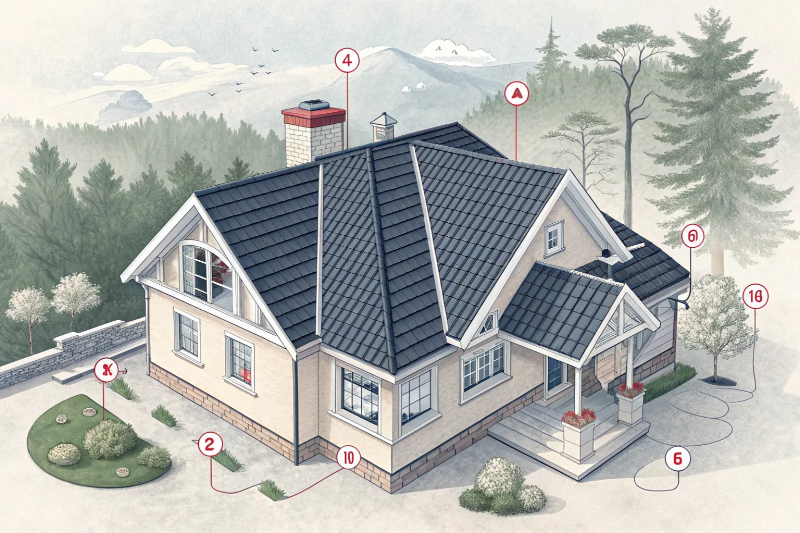

Bokning
Du berättar kort om huset, taket och vad du har sett. Vi bokar en tid som passar.
Att besikta taket är ofta det bästa första steget. Vi går igenom takets skick, riskpunkter och avvattning och ger dig ett tydligt underlag – innan du beslutar om renovering eller takbyte.
Utan en korrekt bedömning är det svårt att veta om ett problem kräver akut insats eller kan planeras längre fram. Många hör av sig efter att ha sett en missfärgning i undertaket, lösa pannor eller mossa på utsatta ytor.
En besiktning ger svar på om det är ett isolerat problem eller ett tecken på större belastning – och är ett bra underlag inför takbyte eller takrenovering.

Vi gör en samlad bedömning av skick, funktion och rekommenderad åtgärdsnivå, och dokumenterar fynden så att du kan prioritera rätt.
Vanliga fynd är otäta anslutningar, takläckage, begynnande fuktskador på vinden och slitna beslag.
Det bästa tillfället är innan problemen syns inomhus. En besiktning är särskilt värdefull i några lägen:
Är du osäker på hur gammalt taket är kan du jämföra med normal livslängd för olika material i vår guide om takmaterial och livslängd.
Du berättar kort om huset, taket och vad du har sett. Vi bokar en tid som passar.
Vi går igenom takytan, plåtdetaljer, anslutningar, avvattning och – om det går – vinden.
Vi dokumenterar fynden med foton och bedömer vad som är akut och vad som kan planeras.
Du får en tydlig rekommendation: service, renovering eller takbyte – och offert om du vill.
Tegel- och betongpannor: spruckna eller förskjutna pannor, frostskador, lösa nockpannor, mossa och påväxt samt skicket på underlagspappen där den syns. Läs mer om tegel, betong och plåttak.
Plåttak: rost, lösa eller otäta falsar, infästningar och skruvar, färgskikt och skarvar. Se även måla plåttak och falsat plåttak.
Detaljer på alla tak: skorstenens beslag och fogar, genomföringar, takfönster, hängrännor och stuprör samt taksäkerhet som stegar och snörasskydd.
Mellan besiktningarna kan du själv hålla koll på det mesta från marken och från vinden. Gå inte upp på taket själv – ett halt tak är farligt, och trampade pannor kan börja läcka.
Ser du något av punkterna i listan är det dags att låta en takläggare titta närmare. Läs mer om tecken på att taket behöver bytas.
Vi har kontor i Bromma och besiktar tak i hela Stockholm – bland annat i Bromma, Sundbyberg, Solna, Sollentuna, Danderyd och Täby. Besiktningen är ett bra första steg innan du tar in offerter på takbyte eller takrenovering.
Vanliga signaler att hålla koll på.
Tecken på att taket behöver bytas →Orsaker, symptom och åtgärder.
Fuktskada och mögel på vinden →Lokala takläggare i Bromma och västerort.
Takbesiktning i Bromma →